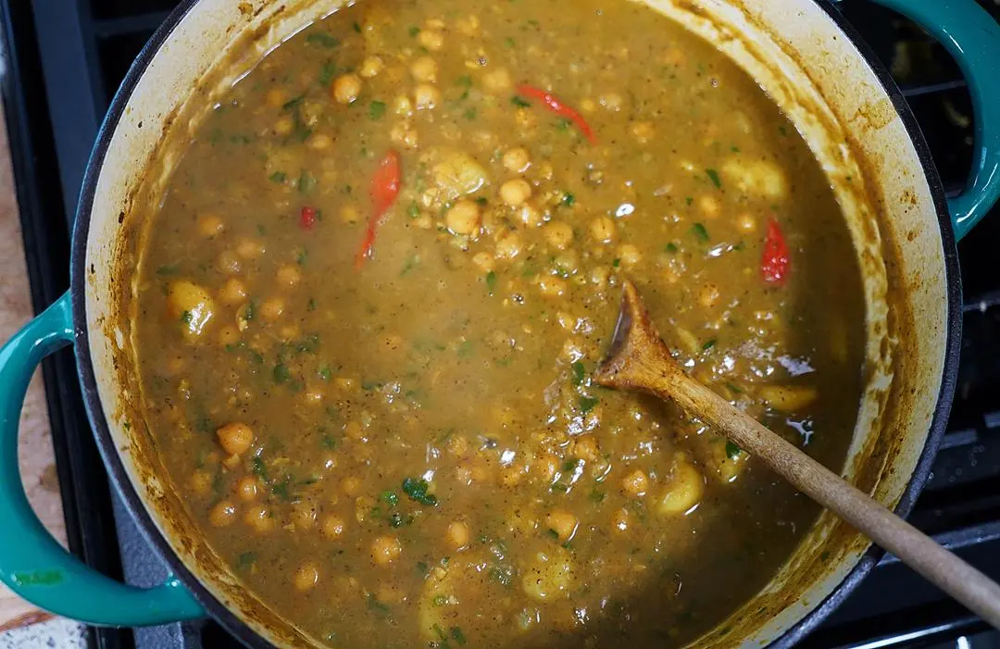
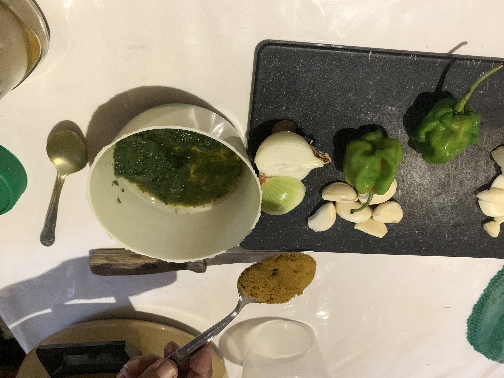
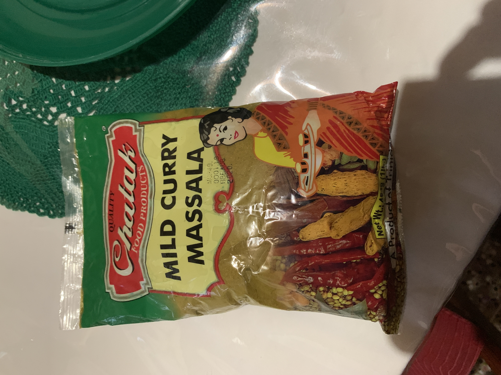

Curry Channa
Home

Ingredients
- 1lb small grain channa (chickpeas)
- 6 medium cloves of garlic
- 1 medium sized onion
- 2 medium hot pepper (Scotch Bonnet/Habanero)
- 2 Tbs Green seasoning
- 2 tablespoons of curry
- 1.5 teaspoon of salt
- 1 pot spoon of oil
- (Optional) half a teaspoon of Geera
Prep
- Take out the channa (chickpeas) and check for rotten ones
- Rinse
- Put double the amount of water as the channa
- Soak for 3 hours
Cooking


- Boil the Channa
- Scoop out the froth
- 20 minutes Medium heat
- First add oil in new pot
- Then fry with Geera and Methi
- Then add half of the onions and all of the garlic till they get light brown
- Add curry and green seasoning and rest of the onion
- Stir for a bit and then add water as it sticks to the pot (3 minutes)
- Add Channa, pepper and salt (1.5 teaspoons)
- Turn over to mix
- Let it cook for 8-10 minutes
- Serve and Enjoy